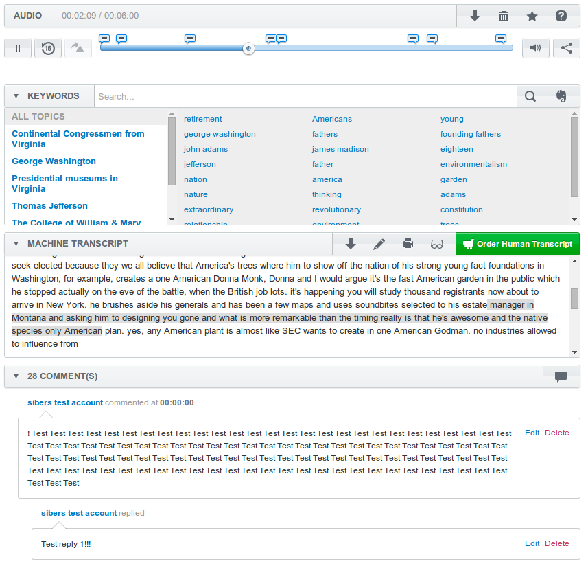

JW Player
Documentation: http://www.jwplayer.com
-
Connect VoiceBase and JW Player files to your code:
<link rel="stylesheet" href="css/jwplayer.vb-sdk-plugin.css"/> <script src="js/jquery.voicebase.js"></script> <script src="http://jwpsrv.com/library/qhNfTJFiEeK7LSIACpYGxA.js"></script> -
Insert the block for player initialization
<div id="playerBlock"></div> -
Initiate player and plugin
<script>jQuery(document).ready(function(){ jwplayer('playerBlock').setup({ file: 'http://example.com/file.mp4', primary: "flash", width: '792', height: '480' }); jQuery('#playerBlock').voicebase({ playerId: 'playerBlock', playerType: 'jwplayer', mediaID: 'mediaId', apikey: 'ABCDEFGH-1234-ABCD-1234-1A2B3C4D5F6G', password: 'you_vb_password' }); });</script>
Youtube
Documentation: https://www.youtube.com/
-
For Youtube player your need include swf-object library and initiate player:
<script src="js/swfobject.js"></script><script>jQuery(document).ready(function(){ var params = {allowScriptAccess: "always", wmode: "opaque"}; var atts = {id: "ytplayer"}; swfobject.embedSWF("http://www.youtube.com/v/lrXIQQ8PeRs?enablejsapi=1&controls=0&showinfo=0&playerapiid=ytplayer", "ytapiplayer", "840", "356", "8", null, null, params, atts); jQuery('#ytapiplayer').voicebase({ playerId: 'ytplayer', playerType: 'youtube', mediaID: 'mediaId', apikey: 'ABCDEFGH-1234-ABCD-1234-1A2B3C4D5F6G', password: 'you_vb_password' }) });</script>
Kaltura
Documentation: http://corp.kaltura.com/
For Kaltura player you can use Flash or Html5 players
-
Flash player
Insert the block for player initialization<div id="app"> <div id="{KALTURA_ID}" style="width: {WIDTH}px; height: {HEIGHT}px;"></div> </div>Initialize Kaltura<script src="http://cdnapi.kaltura.com/p/{PARTNER_ID}/sp/{PARTNER_ID}00/embedIframeJs/uiconf_id/{UICONF_ID}/partner_id/{PARTNER_ID}?entry_id={ENTRY_ID}&playerId={KALTURA_ID}&cache_st=1362074486&autoembed=true&width=400&height=333&flashvars[streamerType]=rtmp&flashvars[mediaProtocol]=rtmp&flashvars[externalInterfaceDisabled]=0"> </script>Initiate plugin
<script>jQuery(document).ready(function(){ jQuery('#app').voicebase({ playerId: 'KALTURA_ID', playerType: 'kaltura', mediaID: 'mediaId', apikey: 'ABCDEFGH-1234-ABCD-1234-1A2B3C4D5F6G', password: 'you_vb_password' }); });</script> -
HTML5 player
Insert the block for player initialization<div id="app"> <div id="{KALTURA_ID}" style="width: {WIDTH}px; height: {HEIGHT}px;"></div> </div>Include Kaltura library<script src="http://html5video.org/kaltura-player/mwEmbedLoader.php"> </script>Initiate player and plugin<script>jQuery(document).ready(function(){ mw.setConfig( 'KalturaSupport.LeadWithHTML5', true ); kWidget.embed({ targetId: '{UNIQUE_OBJ_ID}', wid: '_{PARTNER_ID}', uiconf_id: '{UICONF_ID}', entry_id: '{ENTRY_ID}', flashvars :{ 'externalInterfaceDisabled' : false }, readyCallback: function( playerId ){ window.kdpReady(); } }); jQuery('#app').voicebase({ playerId: 'KALTURA_ID', playerType: 'kaltura', mediaID: 'mediaId', apikey: 'ABCDEFGH-1234-ABCD-1234-1A2B3C4D5F6G', password: 'you_vb_password' }); });</script>
Flowplayer
Documentation: https://flowplayer.org/
-
Initialize flowplayer library
<script src="http://releases.flowplayer.org/5.4.6/flowplayer.min.js"> </script> -
Insert the block for player initialization
<div id="{PLAYER_ID}" style="width: {WIDTH}px; height: {HEIGHT}px;" data-engine="flash or html5"></div> -
Initiate player plugin
<script>jQuery(document).ready(function(){ $("#{PLAYER_ID}").flowplayer({ playlist: [ [ { mp4: "{{ MP4_URL }}" } ] ] }); jQuery('#{PLAYER_ID}').voicebase({ playerId: '{PLAYER_ID}', playerType: 'flowplayer', mediaID: 'mediaId', apikey: 'ABCDEFGH-1234-ABCD-1234-1A2B3C4D5F6G', password: 'you_vb_password' }); });</script>
SublimeVideo player
Documentation: http://www.sublimevideo.net/
-
You should add a site to your account on a http://www.sublimevideo.net/
-
After registrated on a site on www.sublimevideo.net you get a token for a site (for example: abcde1fg)
-
Initialize sublime video library
<script src="http://cdn.sublimevideo.net/js/{{ SITE_TOKEN }}.js"> </script> -
You can publish video on your sublime account and get code of player. This code must be wrapped by <div id="{{ PLUGIN_ID }}"></div>
-
Insert the block for player initialization
<div id="{{ PLUGIN_ID }}"> <video id="{{ PLAYER_ID }}" class="sublime" width="{{ WIDTH }}" height="HEIGHT" data-uid="{{ DATA_UID }}" preload="none"> <source src="{{ MP4_URL }}"> </video> </div> -
Initiate player plugin
<script>jQuery(document).ready(function(){ jQuery('#{{ PLUGIN_ID }}').voicebase({ playerId: '{{ PLAYER_ID }}', playerType: 'sublime', mediaID: 'mediaId', apikey: 'ABCDEFGH-1234-ABCD-1234-1A2B3C4D5F6G', password: 'you_vb_password' }); });</script>
Video.js
Documentation: http://www.videojs.com/
-
Include the Video.js Javascript and CSS files in the head of your page
<link rel="stylesheet" href="http://vjs.zencdn.net/4.8/video-js.css"><script src="http://vjs.zencdn.net/4.8/video.js"> </script> -
Add an HTML5 video tag to your page
<video id="{{ PLUGIN_ID }}" class="video-js vjs-default-skin vjs-big-play-centered" controls preload="auto" width="{{ WIDTH }}" height="HEIGHT" data-setup=""> <source src="{{ MP4_URL }}"> <p class="vjs-no-js"> To view this video please enable JavaScript, and consider upgrading to a web browser that <a href="http://videojs.com/html5-video-support/" target="_blank">supports HTML5 video</a> </p> </video> -
Initiate player plugin
<script>jQuery(document).ready(function(){ jQuery('#{{ PLUGIN_ID }}').voicebase({ playerId: '{{ PLAYER_ID }}', playerType: 'video_js', mediaID: 'mediaId', apikey: 'ABCDEFGH-1234-ABCD-1234-1A2B3C4D5F6G', password: 'you_vb_password' }); });</script>
Example:
Voicebase plugin is responsive. That means plugin is scaled to the width of the container element. Minimum recommended width of the container is 380px.